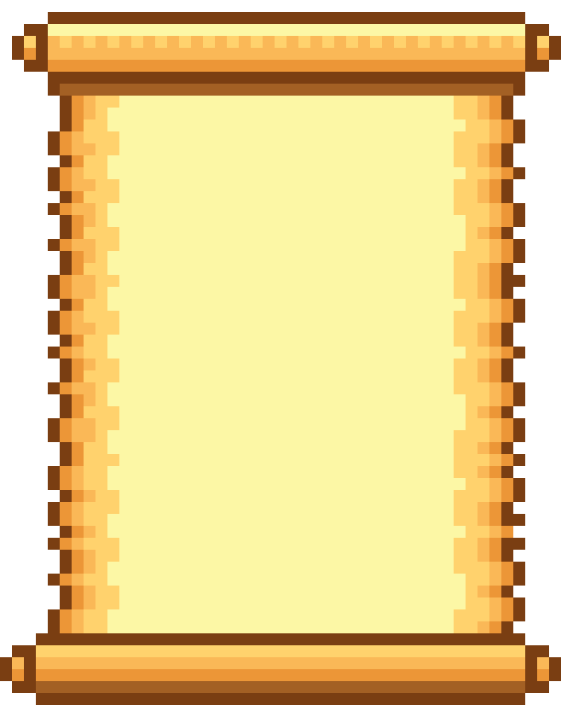

Historia
Tivemos a ideia de criar o Better Planet
com o intuito de sensibilizar a sociedade e também informar sobre
possiveis ações que podem ser realizadas com simples gestos de dar o
destino adequado ao lixo conforme visto nas ODS 14 Vida na agua e 15
Vida terrestre o qual foi a base para o tema do nosso jogo